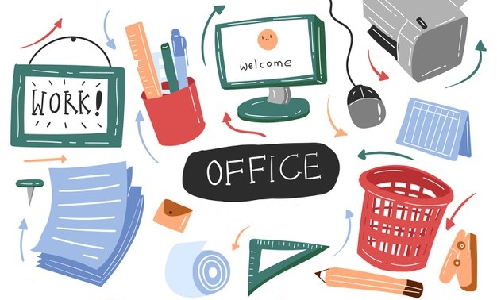
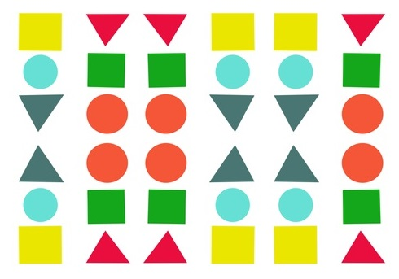
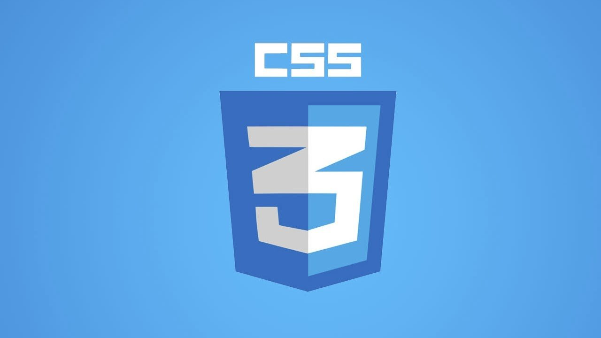
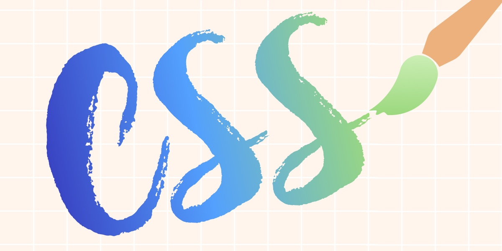
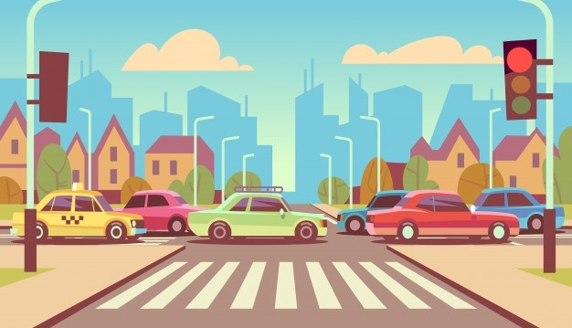
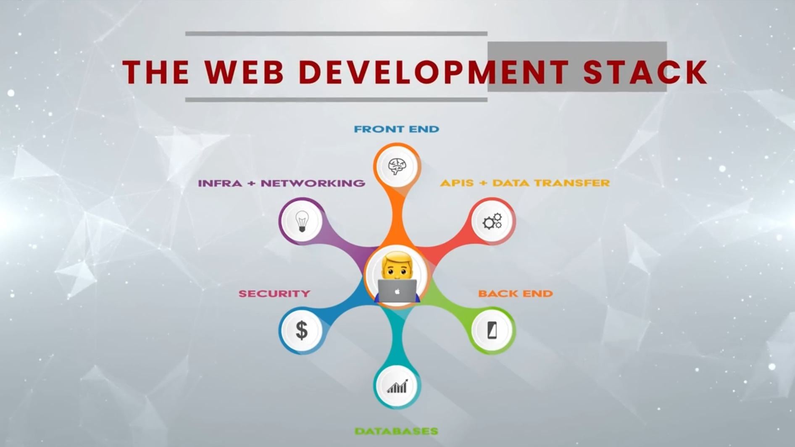

Reaction Testing Application
Read More
One HTML, Different CSS
Read More
CSS - Cascading Style Sheets
Read MoreDark Mode
Read More
A Micro Game
Read More10 Tips for Productivity
Read MoreLists of Tags by Category
Read MoreHypertext Markup Language or HTML
Read MoreMusic at Work
Read More